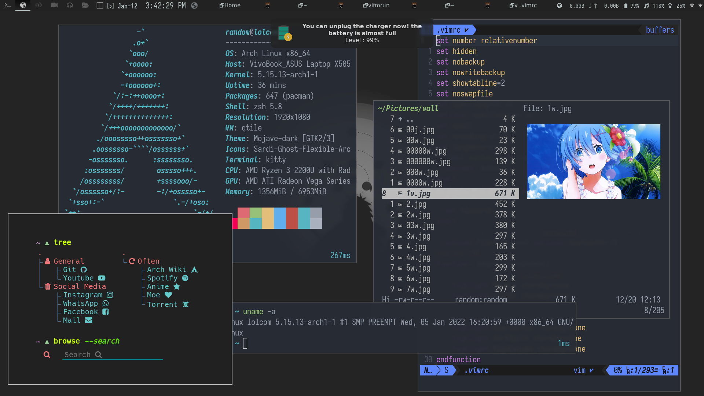

..................................................................................................
.d8b. d8888b. .o88b. db db db d888888b d8b db db db db db
(0) d8' `8b 88 `8D d8P Y8 88 88 88 `88' 888o 88 88 88 `8b d8'
___I_ 88ooo88 88oobY' 8P 88ooo88 88 88 88V8o 88 88 88 `8bd8'>
/\-_-_\ 88~~~88 88`8b 8b 88~~~88 88 88 88 V8o88 88 88 .dPYb.
/ \_-__\ 88 88 88 `88. Y8b d8 88 88 88booo. .88. 88 V888 88b d88 .8P Y8.
..\|/..|[]| [] |...YP YP 88 YD `Y88P' YP YP Y88888P Y888888P VP V8P ~Y8888P' YP YP...
====================================================================================================
....................................................................................................

Earlier in my life I have seen people only knowing Windows as an only operating system in existence for desktop PC. I was no different, however I knew that macOS, DOS, SolarisOS exists due to my computer study in school. Never before I have heard of Linux.
I have a bit of interest in hacking and gaming, during the years when I had my laptop, all I did was browse websites, consume contents, install BlueStack on Windows, run Clash of Clans and yeah all good. I always used to ignore how slow my system was, I used to max up the paging file in windows in order to get good performance, and never dared to run and resource consuming games. So, naturally I put a blame on my poor financial condition(which still is), however the harsh reality was that Windows was sucking all of my system resources.
Windows 7 was my personal pick for an OS, however I didn't get to enjoy or explore everything, cause that time my PC as damaged and in the name of Laptop Repair from a "Self-proclaimed Mechanic" , I was scammed. Well, after 3 years I somehow managed to get an spare laptop because at that time it was pretty clear I'm not getting my laptop back 😀.
However, during that time I learned about cool windows applications such as Rainmeter, Translucent Bar, UXPatcher(or something..) and bat scripting.(I lost the knowledge I gained Once). When I got my laptop back I was feeling quite geeky and was taking interest in hacking, how they do it. There I stumble upon Kali Linux, almost every Youtube Hacking Channel have mentioned it, there I understood that Linux is kinda important for hacking. So, like a normal curious human being, I downloaded the Kali Linux ISO file, flashed it into an USB Stick and I installed it on my first try. Yeah! I wiped everything out, I tried to run it in Virtual Box(VM) but my system couldn't take it, Windows will crash. And there it begins, the era of Distro Hopping.
1. Linux Mint
Though before installing Linux Mint, I have used distros such as Ubuntu, Kali Linux and Parrot OS, however Linux Mint was the perfect stable OS for me that I had no issues with and was using it as my daily driver. During that time I distro hopped due to some things I wanted to do I couldn't do due restrictions & limitations that comes to running a Cinnamon Desktop.
2. Manjaro Linux
I hopped to Manjaro Linux to install the xfce Desktop Environment(Yeah, I was that noob or I still am?). Well, I faced issue with Manjaro touchpad related. So, yeah I distro hopped again, but before that I enjoyed customizing xfce almost to what I wanted using gtk.css and the GUI settings.Custom Keybindings and there I learned the basic terminal commands such as ls, cd, head, tr, sed, grep, wc and much more.
2. MX Linux
When I was disappointed at Manjaro, surely I was not going to install Linux Mint again, therefore I look at this website called Distro watch, and I made my mind to install MX Linux.Installed it without any issues, and used for several days, but something was off my mind wasn't settling down there. so I installed Linux Mint again, wanted to more customization I learned about Tiling Window managers, Vim, Terminal File managers, Hotkey Daemon, Polybar and in general I learned a lot about Linux and I got into the rabbit-hole of Desktop Hopping
[Cinnamon]
It was and still is my one of the go to Desktop Environment for Linux, it is very consistent and uses very less system resource. though in terms of customization I felt little restrictive, but I could do so many things here that I wouldn't imagine it doing on Windows.
[KDE Plasma]
KDE Plasma is stunning right out of the box, however I used to customize KDE as much as I can, I didn't learn much about how customize KDE .css file or such. Though KDe was full-featured and fully customizable, it was a little resource heavy and my 4GB laptop with Dual Core AMD Ryzen 3 didn't like it. It crashed randomly, and yeah this freezing and crashing problem was there in the previous Linux distro & Desktop Environment. There I learned about GRUB and kernel parameters. Also, I learned about myself I only wanted to customize certain aspect of my Desktop Environment, but didn't wanted any bloat. I have also tried the Khroknite tiling plugin for KDE, and I was loving the idea of a Tiling window manager.
So, naturally I learned about various Window Managers such as dwm, qtile, xmonad, bspwm, i3 and also looked on some minimal Linux distro such as Arch Linux, Debian & Gentoo. while I was in manjaro I was loving the power of AUR Helper such as paru & yay, there are so many packages available in an arch based distro and you don't have to build the software from source manually. AUR made me think how dumb Flatpack and Snaps are if you think about it, in my mind snap and flatpack are just doing the same thing as adding a ppa and installing the program on a Debian based distro. So, I downloaded the official Arch ISO, flashed it to my USB Stick and tried to installed it. But I couldn't I wasn't that text savvy at that time and things were really confusing when you are at TTY. Connecting to my mobile hotspot was a pain, however Arch Wiki helped me there, I connected to wifi using the iwctl utility. Well, after that everything was a mess, so I switched to ArcoLinuxD, their installer was great I only installed the hings I needed with xfce desktop environment.
3. ArcoLinux
[Xfce4]
ArcoLinux was far more greater experience than Manjaro, probably it is because I was learning about Linux constantly, such as the init systems(systemd, openrc, runit), more about the elite Terminal Text Editor Vim, about Kernel modules, using modprobe, about Linux file system, file permissions(sudo,chmod,chown), about various Linux shells such as zsh(❤️), bash, dash, sh and fish, about Display Managers such as Lightdm,gdm,ssdm,ly-tui, and about mkinitcpio to modify kernel images. Damm!! I learned a lot about how computer works, I broke GRUB and Display manager so many times, that now whenever I see issue with grub and lightdm at the back of my hed I already know what should I do to fix it.
This was the time I dabbled into shell scripting, as I mentioned here many times I like customizing, for my xfce4-panel I was searching a plugin to show my IP Address on hover & and Country Flag and Initials on the panel. I found none, checked on github for such project but there was none, so yeah like a normal human being I started learning how to write shell scripts. There I found out that Linux don't care about File Formats. Within a day I was able to write a shell script that worked using the xfce-genmon plugin for xfce4-panel, and I have made a repo for my project on github too, it's called -xfce4-genmon-ip-script. I knew that's it I'm not leaving Linux now after feeling so powerful. After a month I wanted to be minimal so I installed Qtile Window Manager, checked out other people configs on github, used it and slowly in time I made it my own. The general idea of configuring your Desktop Environment via scripts was so powerful to me and the freedom I felt was amazing, so I uninstalled xfce completely and was slowly getting used to the Tiling window Manager paradigm. so, it begin every day is a new day you learn something new I loved it, I created more shell scripts such rw, a shell script to scrape and watch anime from 4Anime.towhich is now obfuscated.
during the time using ArcoLinux I faced lots of issue with wifi, and random freezes, while researching I finally found out the kernel parameters to resolve the issue, and learned about other techniques such as reloading kernel modules and try using different Linux kernels such as Zen, Mainline, Hardened & LTS. Howvere, in the process of all this I made my system a bloat, and after a update everything was broken, heck I had to install windows for a month I was so frustrated. But luckily my heart was at Linux and for good reasons, this time I did 10000 year of research before attempting to wipe out my hard disk and install vanilla arch.
4. Arch Linux
I installed Arch on my system with the help of a Github project Archfi, it wasn't that good of a installer but it did it job, however the script was installing things that I didn't require. I setup qtile as usual, along with xfce, because I was still not there completely though I pimped my terminal using oh-my-zsh & POWERLEVEL10K.
In this period I learned how to use vim and vifm, I configured both to my liking and there I was at the perfect spot where I can interact with the computer effortlessly as how I wanted. However, at the back of my head I knew I have bloated my system and I haven't learned the basic things yet so, this time I booted into the arch ISO, connected to my wifi and by following the Archwiki from my mobile I was able to install ArchLinux, this helped me a lot on understanding how a operating system and BIOS works on quite fundamental level.
I also checked the default arch-installer and it did the job for me though it was quite buggy and confusing. Once, I was confident enough I installed arch on my laptop several time, then setup qtile and all other applications I need without any bloat and I'm happy, daily it gives me joy when I use my PC. I came to knew about the UNIX/PORN in Reddit(Why didn't I found it before?), and yeah it was a blast ricing, configuring and maintaining my system and it's still is. Now, I was ready to install ytfzf and watch youtube from terminal and run cmatrix in my terminal to be an "OP Hacker that would take the World down Soon".